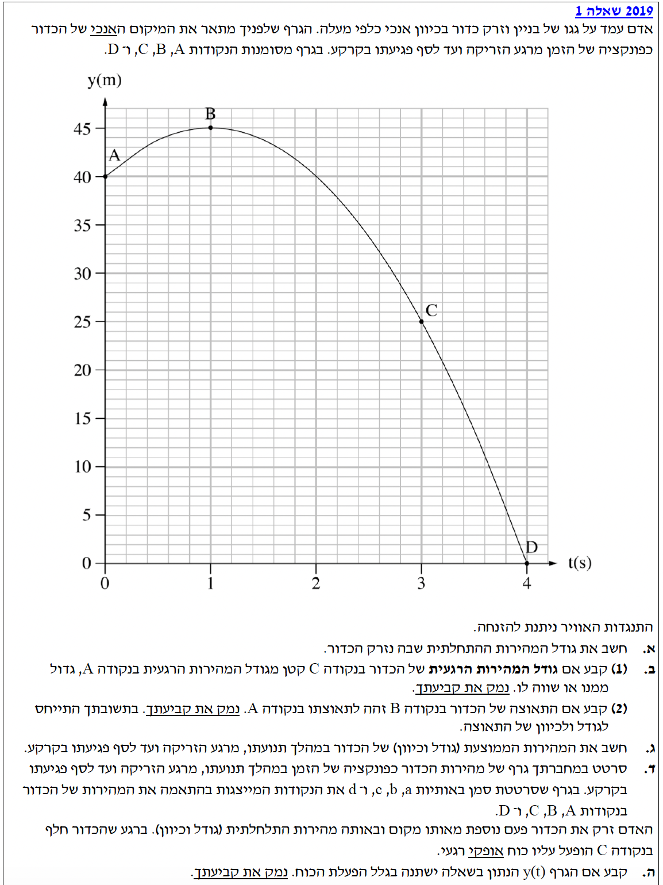
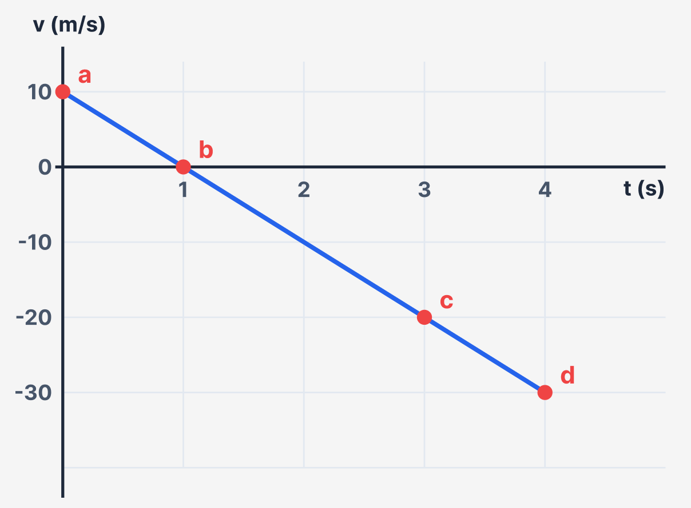

הכנת פתרון מוסבר לתלמידים - צעד אחר צעד

מתוך התבוננות בגרף המיקום-זמן, נוציא את הנתונים (ביחידות MKS). ברגע הזריקה, בנקודה A, הזמן הוא \( t_0 = 0 \text{ s} \) והמיקום ההתחלתי הוא \( y_0 = 40 \text{ m} \). הנקודה B מתארת את שיא הגובה של הכדור. בנקודה זו המשיק לגרף הוא אופקי, ולכן גודל המהירות שם מתאפס: \( v_B = 0 \text{ m/s} \). מהגרף נראה שזמן ההגעה לנקודה B הוא \( t_1 = 1 \text{ s} \). התאוצה, כפי שהסברנו, היא \( a = -10 \text{ m/s}^2 \).
את גודל המהירות ההתחלתית שבה נזרק הכדור, שאסמנה ב- \( v_0 \).
נשתמש בנוסחת המהירות בתנועה שוות-תאוצה: \( v = v_0 + at \).
נציב את הנתונים הידועים לנו עבור נקודת שיא הגובה (נקודה B) בתוך משוואת המהירות:
מצאנו בסעיף הקודם שהמהירות בנקודה A היא \( v_A = 10 \text{ m/s} \). מתוך הגרף, הזמן בנקודה C הוא \( t_C = 3 \text{ s} \). התאוצה נותרת קבועה לאורך כל המסלול, \( a = -10 \text{ m/s}^2 \).
לקבוע האם גודל המהירות בנקודה C קטן, גדול או שווה לגודל המהירות בנקודה A, ולנמק זאת.
נשתמש שוב בנוסחת המהירות בתנועה שוות-תאוצה: \( v = v_0 + at \).
נחשב את המהירות הרגעית של הכדור ברגע שבו הוא נמצא בנקודה C (בזמן \( t = 3 \text{ s} \)):
מהירות הכדור בנקודה C היא \( -20 \text{ m/s} \). הסימן השלילי מציין שהכדור נע כלפי מטה. מכיוון שנשאלנו על גודל המהירות, עלינו להתייחס לערך המוחלט של המהירויות: בנקודה A הגודל הוא \( |10| = 10 \text{ m/s} \) ובנקודה C הגודל הוא \( |-20| = 20 \text{ m/s} \).
מכיוון ש- \( 20 > 10 \), אנו למדים כי גודל המהירות גדל.
השאלה לא דרשה מאיתנו לחשב את הערכים המדויקים! מכיוון שזהו גרף מקום-זמן, המהירות הרגעית מיוצגת על ידי שיפוע המשיק לגרף בכל נקודה. גודל המהירות נקבע על פי תלילות השיפוע (הערך המוחלט שלו).
ניתן לראות בעין כי בנקודה C הגרף יורד בתלילות רבה יותר מאשר העלייה המתונה יחסית בנקודה A. מסקנה מיידית וללא חישוב: גודל המהירות בנקודה C גדול יותר.
הסבר מתמטי למיטיבי לכת: קודקוד הפרבולה (שם המהירות מתאפסת) נמצא ב- \( t=1 \). נקודה A נמצאת במרחק של שנייה אחת מהקודקוד, ואילו נקודה C נמצאת במרחק של שתי שניות מהקודקוד. בגרף פרבולי של תנועה שוות תאוצה, ככל שמתרחקים בזמן מציר הסימטריה (הקודקוד), שיפוע הגרף (ולכן גודל המהירות) גדל תמיד.
הכדור נמצא בשלבים שונים של מעופו, בנקודה A (רגע הזריקה) ובנקודה B (שיא הגובה, בו המהירות הרגעית מתאפסת). נאמר בשאלה כי התנגדות האוויר ניתנת להזנחה.
לקבוע ולנמק האם התאוצה של הכדור בנקודה B זהה להתאוצה בנקודה A מבחינת גודל ומבחינת כיוון.
גוף הנע באוויר כאשר התנגדות האוויר מוזנחת נמצא ב"נפילה חופשית". בתנועה כזו, תאוצת הגוף היא קבועה לכל אורך המסלול ושווה לתאוצת הנפילה החופשית, \( g \approx 10 \text{ m/s}^2 \) כלפי מטה.
מרגע שהכדור עוזב את היד (נקודה A) ועד שהוא פוגע בקרקע, הוא נמצא בתנועה של נפילה חופשית. תאוצת הנפילה החופשית אינה תלויה במהירות הכדור באותו רגע או בכיוון התנועה שלו (בין אם הוא עולה, יורד, או נעצר לרגע בשיא הגובה).
לכן, גם בנקודה A וגם בנקודה B (בשיא הגובה), התאוצה היא אותה תאוצה בדיוק, כפי שהיא קבועה לכל אורך התנועה.
נתבונן בפרק הזמן מרגע הזריקה ועד פגיעתו של הכדור בקרקע. רגע הזריקה הוא \( t_i = 0 \text{ s} \) והמיקום בו הוא \( y_i = 40 \text{ m} \). רגע הפגיעה בקרקע מתואר בגרף בנקודה D. הזמן שם הוא \( t_f = 4 \text{ s} \) והמיקום הוא גובה הקרקע, כלומר \( y_f = 0 \text{ m} \).
את המהירות הממוצעת (גודל וכיוון) של הכדור במהלך כל מעופו באוויר.
נוסחת המהירות הממוצעת: \( \overline{v} = \frac{\Delta x}{\Delta t} \). מכיוון שהתנועה מתרחשת בציר האנכי, נסמן את ההעתק כ- \( \Delta y \), כלומר המשוואה היא \( \overline{v} = \frac{\Delta y}{\Delta t} = \frac{y_f - y_i}{t_f - t_i} \).
נציב במשוואה את נתוני נקודת ההתחלה ונקודת הסיום:
גודל המהירות הממוצעת שקיבלנו הוא \( 10 \text{ m/s} \) והסימן שלילי, מה שמעיד על כיוון מטה.
הראנו כי התנועה היא תנועה שוות-תאוצה, שבה המהירות ההתחלתית היא \( v_0 = 10 \text{ m/s} \) והתאוצה היא \( a = -10 \text{ m/s}^2 \). הזמן הכולל של התנועה הוא מ- \( t=0 \) ועד \( t=4 \text{ s} \).
לסרטט במחברת גרף של מהירות הכדור כפונקציה של הזמן \( v(t) \), ולסמן עליו את הנקודות a, b, c, d המתאימות לנקודות המקוריות.
הנוסחה המקשרת בין מהירות לזמן בתאוצה קבועה: \( v = v_0 + at \). כמו כן, נזכור שהתאוצה היא קצב שינוי המהירות: \( a = \frac{dv}{dt} \), המייצגת את שיפוע הגרף.
משוואת המהירות-זמן שלנו היא פונקציה ליניארית (קו ישר): \( v(t) = 10 - 10t \). נחשב את מהירות הכדור בכל אחת מהנקודות המבוקשות, וניצור עבורן נקודות ציון \( (t, v) \):
נסרטט את הגרף. זהו קו ישר היורד בשיפוע קבוע (ששווה לתאוצה, \( -10 \text{ m/s}^2 \)).

האדם זורק את הכדור בשנית, בדיוק מאותו מקום ועם אותה מהירות התחלתית כפי שחושבה. עם זאת, בדיוק ברגע בו הכדור עובר בנקודה C, מופעל עליו לפתע כוח אופקי רגעי (המקנה לו מהירות אופקית פתאומית).
לקבוע ולנמק האם גרף פונקציית המיקום האנכי \( y(t) \), שהוצג בתחילת השאלה, ישתנה בעקבות אותו כוח אופקי רגעי.
כאן אנו נשענים על העיקרון של אי-תלות בין הצירים (החוק השני של ניוטון מוחל בנפרד על כל ציר: \( \Sigma F_y = m \cdot a_y \) ו- \( \Sigma F_x = m \cdot a_x \)).
כוח רגעי הפועל בכיוון האופקי בלבד מקנה לכדור רכיב מהירות חדש בציר ה-x. מרגע זה ואילך התנועה הופכת לתנועה דו-ממדית (מעין זריקה אופקית / משופעת החל מנקודה C).
אולם, עלינו לבחון מה קורה בציר האנכי (ציר ה-y). מאחר והכוח שהופעל היה אופקי לחלוטין, אין לו שום רכיב בציר האנכי. הכוח היחיד שממשיך לפעול על הכדור בציר ה-y נותר כוח הכבידה \( mg \) כלפי מטה. מכאן נובע שתאוצת הכדור בציר ה-y נשארת \( -10 \text{ m/s}^2 \) גם לאחר הפעלת הכוח הרגעי. נוסף על כך, המהירות האנכית של הכדור ברגע הפעלת הכוח אינה משתנה (הכוח הרגעי הוסיף מהירות בציר ה-x בלבד).
מאחר והמיקום ההתחלתי, המהירות האנכית ההתחלתית והתאוצה האנכית נותרו זהים לחלוטין לאלה שבזריקה הראשונה - משוואת התנועה בציר ה-y לא משתנה כלל.